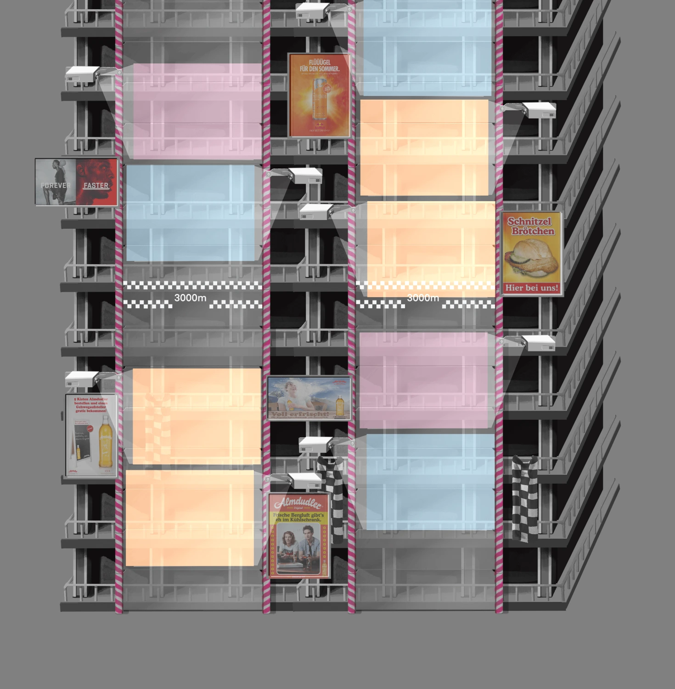
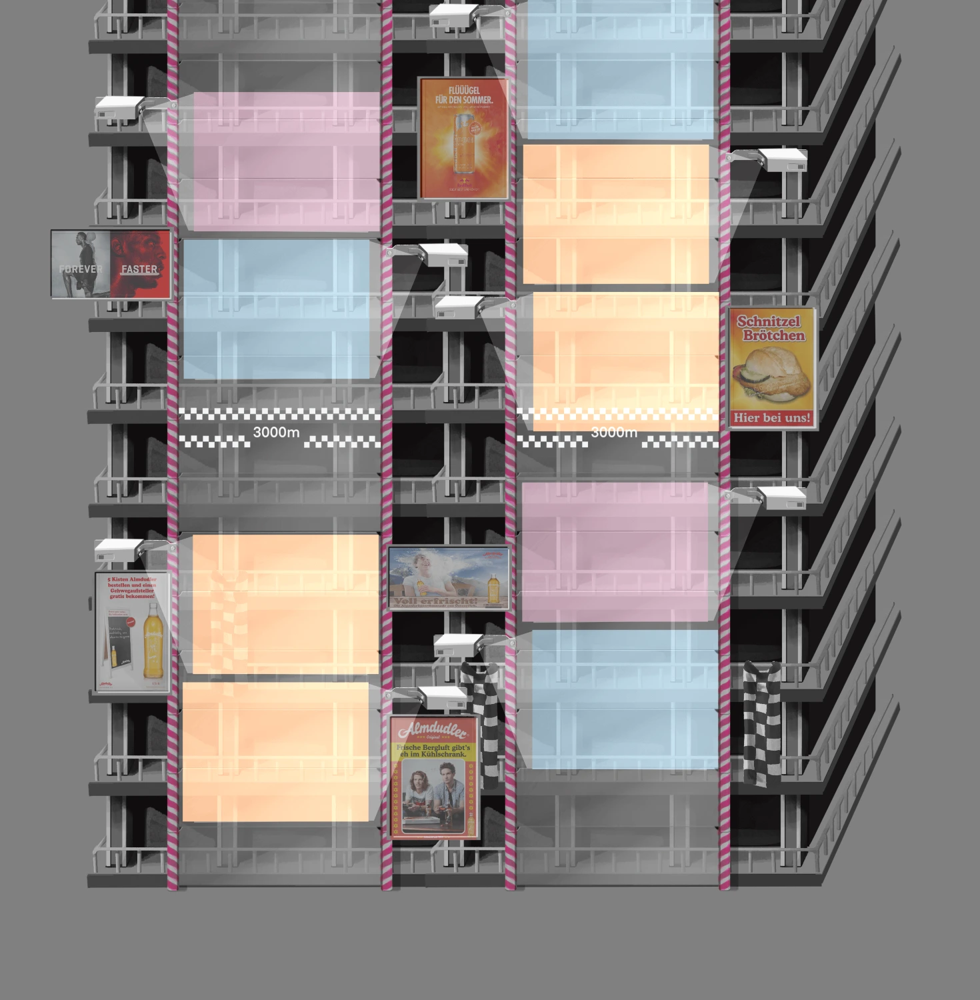

Peak Rhythm is a VR rhythm climbing game where players climb on the back of a robot to the rhythm of the music. The goal is to get the robots as high as possible by grabbing different holds at the right time to move upwards. It's important to look where you're going, move quickly and keep the rhythm.
When I started working on Peak Rhythm, I was first tasked with coming up with concepts for the distant background, which consisted of a mountainous cenery with solar-punk futuristic buildings in front of it. This was meant to visualise a Vienna-inspired city of the future.
Read MoreIn between working on concepts, I was asked to create a cover illustration. So I had to quickly come up with placeholder character and robot designs to be used in said illustration.
Read MoreWith a few interruptions, the project has now come full circle for me, back to the concepts of the environment. I'm currently working on the main building, which the players' robots will climb. However, this is still very much a work in progress.
 

 Antonia Pecha
Antonia Pecha